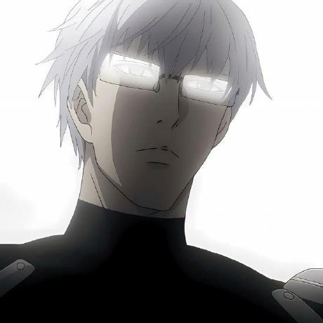

Собственные проекты
От первой идеи до рабочего инструмента.
CODE ↗ТВОЙ ПРОФИЛЬ. ТВОЙ СТИЛЬ.
Начни с готовой темы. Настрой детали. Сохрани свою сборку.

Разработка, инструменты и собственные проекты.
C# / C++ / Rust / Python
PROFILE / OVERVIEW
Всё важное - на своей странице.
От первой идеи до рабочего инструмента.
CODE ↗Цвет, типографика и детали, которые подходят тебе.
BUILD ↗Предпросмотр показывает оформление. Содержимое реального профиля сохраняется, пока ты не задашь собственный текст.